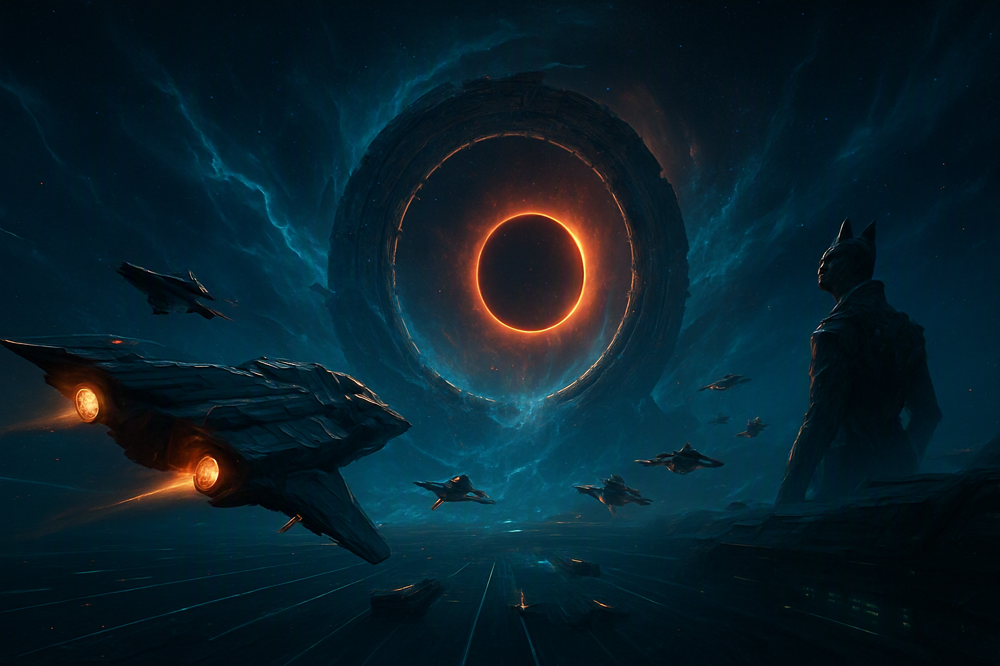
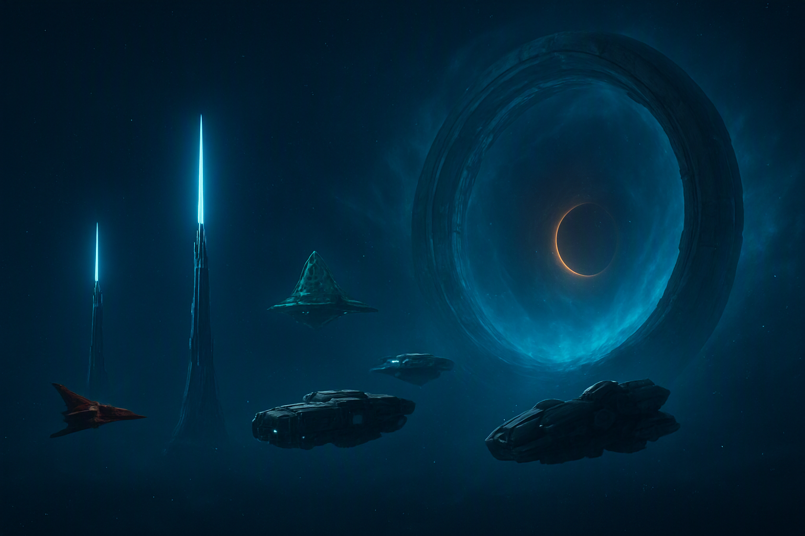

〈タイガーズ・クロー〉航空団への辞令
プレイヤーは連邦前進基地オリオン港に寄港する空母の艦載機パイロット。任務は護衛、偵察、迎撃、救難。上官は艦長ウィリアム・ハート、作戦航法はソフィー・ローラン、基地防衛はキム・ソヨンが担う。敵側ではキルラシーの決闘士ラギティカが、毎回「名を名乗れる戦い」を要求する。彼女の目的は侵略だけではない。
空母〈タイガーズ・クロー〉から始まる十回の出撃。勝利は撃墜数では測れない。誰を帰し、どの航路を残し、敵に何を約束するかが、ヴェガ門の明日を決める。

ラグランジュ事故で失われた「九分間」が、再びヴェガ門に現れた。連邦は航路を守るため、キルラシーは祖先の聖域を守るために艦隊を進める。だが、門の向こうで目を覚ましつつあるのは、どちらの敵でもない。
主人公は人物名鑑の人類36名から選択可能。固定主人公にはせず、台詞は役職・過去の功績に応じて差し替える設計とする。
プレイヤーは連邦前進基地オリオン港に寄港する空母の艦載機パイロット。任務は護衛、偵察、迎撃、救難。上官は艦長ウィリアム・ハート、作戦航法はソフィー・ローラン、基地防衛はキム・ソヨンが担う。敵側ではキルラシーの決闘士ラギティカが、毎回「名を名乗れる戦い」を要求する。彼女の目的は侵略だけではない。
各章は「出撃前ブリーフィング → 空戦／航路判断 → 帰還後の反応」で進む。分岐は章を増やすのではなく、次章の僚機・補給・通信内容を変える。

敵味方の双方が「止まっている場所」を見失わないよう、三基の通信灯台を六十秒だけ守る。ここまでの選択が、初めて同じ空域で味方の姿になる。
オリオン港の外縁は、避難民輸送の順番待ちで三百隻が漂う渋滞空域だ。そこへ連邦識別コードを正しく返す輸送船〈アストラ・メイ〉から救難信号が入る。機関出力は三割、右舷に長い焼け跡。ハート艦長は報告を待たずに発艦を命じる。艦長になる前の二十年を救難隊で過ごした男の指示は短い。「撃つ前に、拾える者を拾え。順番を間違えるな」。
だが現場でプレイヤーが見るのは、輸送船に取り付いたキルラシー先遣隊三機と、輸送船側の砲塔が先に火を噴いたという航跡記録である。両軍はまったく同じ主張をしている。相手が協定を破った、と。しかもラギティカの僚機ヴァークが儀礼周波で読み上げているのは宣戦布告ではなく、六者通行協定第四条の救難義務条文だ。キルラシーもまた、この船を拾いに来ていた。
積荷目録には民間医療物資と書かれている。実際に固定されていたのは、2246年の第一次封鎖で連邦軍需企業が事故跡から回収した門制御核の断片だった。誰が積み、どこへ運ばせようとしたのか、船長は最後まで答えない。第一章は操作の導入でありながら、この戦争の問題を一度に手渡す。所有者のいない扉、書き換えられた積荷、そして同じ空域で両軍が信じている別々の事実。
出撃前のブリーフィング室で反対するのは基地防衛司令キム・ソヨンだ。オリオン港の防衛線を二度作り直し、避難民区画を守り抜いた三十八歳は、迎撃機を外縁へ出す判断を数字で否定する。港内には登録済みの避難民が四万人いる。哨戒機を四機抜けば、外周の索敵密度は三割落ちる。「輸送船一隻に、区画一つを賭けるんですか」。ハートは賭けると答える。この対立に正解はなく、結果は港の空気として次章へ持ち越される。
戦闘そのものは軽い。F-54 ホーネットで先遣隊を追い散らすだけなら、着任初日でも務まる。難しいのは同時に走る三本のタイマーだ。輸送船の隔壁が保つ時間、脱出ポッドの生命維持、逃げるキルラシー機が航路情報を持ち帰るまでの時間。三つ全部は間に合わない。プレイヤーはこの章で、達成しなかった勝利条件が記録として残ることを学ぶ。
帰還後の格納庫は静かだ。整備員が焼けた装甲板を剥がし、ハートは救難ポッドの搭乗者名簿を自分の手で書き写す。「戦果報告は明日でいい。名前を先に確定させろ」。夜、ヴェガ門方向から短い通信が入る。相手は名乗り、こちらの機体番号を正確に読み上げ、一言だけ残して切る。「次は、名を名乗れる戦いにしよう」。
ソフィー・ローランが断片ログを復号すると、ありえない座標が浮かぶ。2229年のラグランジュ事故で消失した巡洋艦の生存者信号。八十三年前に消えた船から届いたタイムスタンプは、六時間前を指している。門解析員として不安定な開口を予測してきた彼女は、それでも回収に賛成する。「観測できるものを観測しないのは、航法ではなく信仰です」。
編隊を襲うのは、連邦とキルラシー双方の識別を模した無人機群だ。ロックオンのたびに応答が二重化し、通信には僚機の声が混じる。電子戦士官の小林直子が繰り返すのは一つだけ。「撃つ前に、声の遅延を数えて」。撃墜数を稼ぐほど誤射の確率が上がる構造で、この章はプレイヤーに識別と自制を教える。
回収された帰還者は三人。一人は連邦艦隊に撃たれたと言い、一人はキルラシーに撃たれたと言い、最後の一人は誰も撃っていないと言う。門が引き込んだのだ、と。三人の生体記録は完全に一致している。矛盾は嘘ではなく、門が返した三つの結果だった。そこへ異種通信アンドロイドのメモリアが現れ、共通記録層への接続を申し出る。どれが本当かは、繋いでみれば分かるかもしれない。繋いだものは、二度と切り離せないかもしれない。
任務は正規の命令ではない。司令部は八十三年前に沈んだ船の座標を認めず、ソフィーは航法演習の名目で三機分の燃料を確保する。ハートは書類を見て一度だけ確認する。「演習で、脱出ポッドの回収装備を積むのか」。積みます、と彼女は答える。この小さな逸脱が、第七章で艦長が命令を破るときの前例になる。連邦の指揮系統は、こうして少しずつ現場に押し曲げられていく。
戦闘は撃ち方ではなく、撃たない訓練になる。無人機は双方の識別を返し、ロックオンの応答は二重化する。正しい判別方法は一つで、通信の遅延を数えることだ。味方の声は必ず遅れて届き、偽装された声は遅れない。焦って撃てば僚機の識別を撃つ。この章の評価は撃墜数ではなく、誤射ゼロで漂流者を回収できたかで決まる。
帰還後、三つの矛盾する証言をどう扱うかが問われる。公表すれば避難民は門を恐れて第三勢力の船へ移り、連邦の輸送計画は崩れる。解析室に封印すれば秩序は保たれるが、同じ空白を抱えた他勢力はこちらを信用しない。セレシオンとオルドが応答するのは、記録を隠さなかった相手だけだ。情報は武器ではなく、通貨としてこの戦争を動かしている。
静穏海の避難回廊を十年維持してきた船団指揮者アウルの要求は、護衛の増派ではない。回廊に入る全艦の武器管制を停止せよ、というものだ。セレシオンに国家はなく、あるのは季節ごとに移動する合唱圏だけ。彼らにとって中立は逃避ではなく、誰も見捨てないために選んだ武装である。連邦の砲を止めなければ、キルラシーの砲も止まらない。
そこへニューロウムの機雷帯が航路を塞ぐ。厄介なのは、この機雷が避難船にはまったく反応しないことだ。反応するのは軍用推進器の熱紋だけ。護衛が近づくほど回廊が危険になる、という反転した戦場が生まれる。撃墜の腕は役に立たない。問われるのは、アウルの共鳴パルスと呼吸を合わせ、安全な一分間を正しい場所に作れるかどうかだ。
避難船十八隻のうち六隻は自力航行できず、非武装の救難艇パイロット、クレア・ベネットが牽引に入る。撃墜後の脱出ポッドを最短時間で十四基拾った二十四歳は、この章で一度も引き金を引かない。もう一つ動くものがある。通信翻訳者アクスが、連邦機の非殺傷判断をキルラシーの誓約語へ訳し直し、儀礼通信士ヴァークの記録に残すのだ。この一行が、灰冠回廊での決闘の条件を変える。
ブリーフィングでは、武器管制停止に艦橋が反発する。避難船十八隻の護衛に、非武装で入れというのか。ソフィーが試算を出す。回廊内で共鳴パルスが働く条件は、周囲に稼働中の火器管制がないこと。つまり武装は防御ではなく、回廊を壊す要因として計上されている。ここで初めてプレイヤーは、自分の強さが場のルールに不利益として扱われる戦場を経験する。
実戦部分は精密な段取りのゲームになる。アウルのパルスは八十秒ごとに一分間だけ機雷の熱紋判定を鈍らせる。その窓の間に避難船を通し、外れた船を牽引し、追ってくる帝国の哨戒機には撃たずに進路を譲る。撃てば窓は閉じ、機雷は動き出す。撃たない判断がそのまま生存率になる構造で、腕の良いパイロットほど自分の反射と戦うことになる。
帰還後、アウルは礼を言わない。彼らの言語に感謝という語はなく、代わりに次の季節の航路図が届く。静穏海の中立回廊は、以後こちらの補給と避難に開かれる。そしてアクスの訳した誓約語が灰冠回廊へ届く。「その者は、砲を持ちながら撃たなかった」。第五章でラギティカが単機決闘を申し込む理由は、この一行である。
深層採掘帯を無許可で強行通過した連邦の契約船が、オルドの重力アンカーで空中に縫い止められる。船体は無傷、乗員も生きている。オルドは殺していない。ただ止めているだけだ。だが千二百年を生きる合議王アークの裁定は数十年単位で下るため、船内の空気は先に尽きる。オルドにとっての「即時」と、人類にとっての「今」は、単位が違う。
例外的に交渉窓口となるのが重力戦術官アインである。九十一年しか生きていない彼は、オルドの中では若く、短期の言語を扱える。その彼が告げるのは告発ではなく症状だ。連邦が持ち出した門制御核の断片が、採掘帯の地層記憶を焼いている。オルドにとって地殻は資源ではなく、文明そのものの記憶媒体である。彼らは補償を求めない。傷が広がる前に、断片を止めてほしいだけだ。
プレイヤーの選択は残酷なほど単純だ。アンカーを撃てば乗員は今すぐ助かるが、オルドは記録に「連邦は境界を撃った」と刻む。採掘停止の証拠回収を先に済ませれば、契約船の空気は削られていく。爆撃機パイロットのオマル・ラーマンは最小の損害で航路を開いてきた男で、この章では自分の腕を使わない提案をする。ここで得たオルドの信頼だけが、終盤で門を物理的に固定する手段になる。
ブリーフィングは救出作戦の形をしていない。重力アンカーは兵器ではなく境界標であり、撃てば連邦が協定違反の側に立つ。参謀ニア・ウィリアムズが確認するのは政治ではなく在庫だ。契約船の空気は十九時間、採掘記録の掘り出しは十四時間、往復の燃料が許すのは一回だけ。全部やる余裕はない、と彼女は言う。「どれを諦めるか、先に決めてください」。
戦場は重力井戸と移動する残骸帯で構成される。アンカーの周囲では自機の質量が数秒単位で変わり、ミサイルは弧を描いて戻ってくる。アインは敵ではないので撃ってこない。ただし彼が局所重力を動かすたび、こちらの機動は前提を失う。非破壊で装甲艦の進路を逸らしてきた戦術官との共同作業は、指示を信じるか自分の照準を信じるかの選択に還元される。
どちらを選んでも、オルドは記録する。アークの裁定はこの章では下らない。千二百年を生きる合議王にとって、今回の出撃は地層に刻まれる細い一本の線でしかない。だがその線が、第八章で門周辺の重力固定を差し出すかどうかを決める。オルドは感謝も報復もしない。ただ、刻まれたものを後で読むだけだ。人類の側にとって、それは最も長く残る戦果である。
灰冠回廊。キルラシー帝国艦隊が砲門を開いたまま、一斉に静止する。決闘士ラギティカが単機決闘を申し込んだのだ。彼女の誓約は明快で、決闘の間、帝国の全砲は沈黙する。代わりに連邦も一機だけを出す。KF03 グレイハウル対 F-44A ラピアーII。撃墜した敵の名をすべて記憶している女が、無線で最初に尋ねるのは戦力ではない。「あなたは門を盗んだ者か。それとも、帰す者か」。
決闘は取材でもある。彼女が本当に知りたいのは連邦が保有する制御核の所在で、こちらの機動、被弾許容、僚機を庇う癖のすべてが質問になっている。名を交換する儀礼を成立させれば、こちらの問いも一つ通る。ヴァークが両者の通信を誓約文として記録し、帝国の公式史に残す。この戦争で初めて、勝敗以外のものが記録される瞬間だ。
そして誓約を破るのは敵ではなく、身内だった。拡張を望む若い軍家の分艦隊が、決闘空域ごと二機を撃ち抜こうとする。ラギティカの機体は片翼を失い、脱出信号を出さない。誇りのためではなく、その信号が急進派に位置を教えるからだ。勝利を優先するか、敵エースを回収するか。救えば大牙王ヴァルカーンの停戦窓口が開く。撃墜しても戦争は終わらない。名前が一つ、記憶から消えるだけだ。
決闘の受諾は艦としての判断になる。ヴァルカーンの誓約下では帝国艦隊の砲は止まるが、連邦司令部にそれを保証する条文はない。断れば艦隊戦が始まり、〈タイガーズ・クロー〉は数で負ける。受ければ、勝敗を一機に預ける。ハートは受諾を選び、無線を開いたままにする。「艦の全員に聞かせろ。名を名乗る戦いというものを、うちの若いのは見たことがない」。
戦闘は純粋な一対一の機動戦として設計される。グレイハウルは加速と旋回で勝り、ラピアーIIは装甲と火力で勝る。彼女は撃墜を狙わず、こちらの癖を測ってくる。僚機を庇うか、被弾を許容するか、逃げる敵を追うか。前章までの選択がここで問い直され、決闘中の無線には過去の判断が引用される。彼女は敵の名だけでなく、その戦い方も記憶している。
急進派の介入で、戦場のルールが一段変わる。誓約を守る側と破る側が、敵味方の線と一致しなくなるのだ。ヴァークは中立の記録者として通信を開き続け、その記録が第七章の告発と第八章の停戦の法的根拠になる。この章で最も重い戦果は撃墜ではない。名前を交換した相手が生きていて、その名前が公式記録に残っているという事実である。
巣脈群でニューロウムの中継器群を破壊せよ、という命令が下る。現場は通信妨害とドローンの飽和で、味方の位置が三秒遅れて届く地獄だ。個体を失うことを死とみなさない相手に、威嚇も人質も通じない。撃てば撃つほど、群体はこちらの戦い方を学習して増える。
中継器の中枢で応答するのは原初核クラウンである。彼の説明は侵略の弁明ではなく、工事の報告だった。ヴェイルの異常が拡大している。門が閉じかけているのではなく、開きかけている。群体は各勢力の航法ログを強制同期させ、その裂け目を縫おうとしていた。同期に同意しない文明のログだけが穴として残り、そこから広がっているのだと。
情報作戦士官の朝比奈律が、同期先の記録に手を止める。連邦がまだ立案していない作戦の航路が、すでに記録層に存在するのだ。メモリアはそれを予測ではなく反射だと言う。接続は救難であり、同時に支配でもある。限定接続を許可すれば、終盤で敵味方すべての航路を同一画面で見渡せる。ただし連邦内部は、機械に艦隊の航法を預けた指揮官を許さない。この章の敵は群体ではなく、同意という言葉の重さである。
命令自体は単純だ。中継器を破壊し、通信障害を解消する。反対するのは情報作戦士官の朝比奈律である。障害の発生時刻とヴェガ門の異常出力の記録が完全に同期している。中継器は障害の原因ではなく、障害を測っている装置かもしれない。「壊すのは構いません。ただ、体温計を割っても熱は下がりません」。命令は変更されず、判断は現場に落ちる。
戦場はこのキャンペーンで最も不快な空間になる。妨害で味方位置は三秒遅れ、ドローンは撃った数だけ学習して隊形を変える。個体を潰しても群体は痛みを感じない。降伏も人質も成立せず、恐怖という交渉手段が完全に無効化された相手と戦うことで、プレイヤーは自分の戦い方がどれだけ相手の恐怖に依存していたかを知る。
帰還後、艦内は割れる。限定接続を選べば、終盤で敵味方すべての航路を同一画面で見渡せる。だが機械に艦隊の航法を預けた指揮官として、連邦内部の反発は避けられない。完全遮断を選べば信用は保たれ、代わりに第九章で門の内側を測る手段を失う。クラウンは急かさない。彼にとって同意とは、得るものではなく待つものだからだ。
回収された記録が、六者通行協定の裏側を開く。署名されなかった七つ目の条項——門制御核の共同管理案である。ラグランジュ事故の直後、連邦の軍需企業と帝国の急進派は条項を葬り、核を二つに割って持ち帰っていた。八十三年分の戦争は、資源争いでも聖域の防衛でもなく、割られた鍵の後始末だった。
ハート艦長は艦隊への即時報告を命じる。だが司令部の返信は停止命令だ。証拠の確保を理由に空母は足止めされ、告発データの搬送先である鏡面都市の公証ノードは、七十二時間後に契約再審査で閉じる。参謀ニア・ウィリアムズは四十日の継戦計画を組み上げた実務家として、感情ではなく残量で語る。「行けます。ただし帰りの燃料と、あなたの経歴のどちらかは戻りません」。
機械公会は正義で動かない。契約と手続きでしか動かない。だから告発は、正規の書式で、期限内に、第三者の公証を経て提出されなければ一片の効力も持たない。正式手続を待つか、艦長とともに無許可で発艦するか。ここで失うのは評価ではない。次章の発艦甲板に、誰が並んでくれるかである。命令に従った者は残り、従わなかった者は飛べる。その両方が、次の六十秒を左右する。
章の始まりは戦闘ではなく、書庫の照合作業だ。第一章の積荷、第二章の帰還者証言、第四章の採掘記録、第六章の同期ログ。四つが同じ製造番号を指し、割られた核の片方が連邦の軍需企業に、もう片方が帝国の若い軍家にあると判明する。八十三年の戦争を通じて、両陣営の強硬派だけが同じ資産を共有していた。プレイヤーが撃ってきた敵は、その資産を守る壁だった。
出撃は搬送任務として設計される。護衛はつかず、積荷は一箱、目的地は鏡面都市の公証ノード。妨害してくるのは敵ではなく、連邦の哨戒機と、こちらの識別を知り尽くした帝国の急進派である。撃てば同胞を撃つことになり、撃たなければ足を止められる。非殺傷で拘束するための装備選択が、この章の実質的な難易度を決める。
どちらを選んでも艦は代償を払う。無許可出撃なら次章の搭載兵装は減り、司令部の無線は冷たくなる。正式手続を選べば公証ノードは閉じ、証拠は第八章の停戦交渉に間に合わない。ハートは部下に選ばせる。五十七歳の艦長が救難隊時代から変えていない基準は一つだけだ。「命令は後で書き直せる。人は書き直せない」。
鏡面都市の自動公証機構は、全勢力の同時承認がなければ証拠を認証しない。人類の告発文だけでは一行も通らない。セレシオンは避難回廊の開放を、オルドは門周辺の重力固定を、ニューロウムは通信同期を差し出す。連邦は空母を、キルラシーは誓約を出す。史上初めて六つの署名が同じ書式に揃おうとしている。必要な時間は六十秒。
その六十秒を可視化するのが、空域に配置された三基の通信灯台だ。灯りが消えれば承認は無効になり、機構は審査を数か月先へ送る。プレイヤーは連邦とキルラシーの砲火の間で、この光を守る。撃ち合いを止めるための盾ではない。撃ち合っている両軍に、止まっている場所が見えるようにするための光である。
当然、急進派は灯台を狙う。そして戦闘の途中で、敵側の被弾艦から救難信号が上がる。味方艦の護衛を続けるか、敵の救難に向かうか。六十秒は一つしか選ばせない。敵を救えば、ヴァルカーンはこれを名誉ある共同作戦として承認し、帝国の公式記録に連邦機の名が残る。味方を守れば艦隊は無傷で、しかし承認は連邦単独の手柄として薄くなる。一分あれば、艦隊は引き返せる。なければ、門が開く。
ブリーフィングは、五勢力の代表が初めて同じ画面に並ぶ場面になる。アウルは季節の言葉で承認を語り、アークは千二百年の尺度で今回の署名を「短い線」と呼び、クラウンは同期の所要時間を秒で示す。ラギティカは大牙王の代理として、誓約の形式でしか承認を出せないと告げる。通訳はアクスとメモリアが分担する。誰も相手を信じていない。それでも書式は揃う。
防衛は純粋な時間管理になる。灯台三基は互いに離れており、一機では二基までしか間に合わない。どの一基を捨てるかで、承認に参加できる勢力の組み合わせが変わる。第三章で回廊を守っていればセレシオンの護衛船が一基を代行し、第四章でオルドの信頼を得ていれば重力固定が被弾判定を減らす。過去七章の選択が、初めて具体的な援軍として画面に現れる。
六十秒が終わると、機構は事務的に判定を返す。認証、または保留。認証されれば七つ目の条項が八十三年遅れで発効し、門制御核は共同管理下に入る。保留されれば審査は数か月先へ送られる。どちらでもこの章は終わり、そして次の章で門が開く。停戦は達成の頂点ではなく、間に合わなかったものを数えるための一分間である。
六つ目の署名が入る直前、急進派が奪取した制御核を起動する。ヴェガ門は各艦を引き込み、そして返さない。プレイヤーが見るのは、事故が起きなかった時間線である。ラグランジュ裂谷に交戦線はなく、オリオン港に避難民はいない。〈タイガーズ・クロー〉の格納庫には、第一章で拾えなかった者が立って笑っている。門は過去を保存していない。選ばれなかった未来を反射している。
位相迷路の攻略手段は火力ではなく記憶だ。過去九章の無線が、まったく別の意味を持って再生される。救難を優先した無線は感謝ではなく告発として、追撃を選んだ無線は戦果ではなく謝罪として返ってくる。ソフィーは自分の声が自分に反論するのを聞きながら、帰投窓の計算を続ける。「一致しない記録が三つあるなら、二つは幻です。問題は、あなたがどれを幻と呼べるかです」。
迷路の中心に、ラギティカとクラウンがそれぞれの理由で立っている。決闘士は自分が撃った全員と再会し、原初核は縫おうとしていた裂け目の内側を初めて見る。中心に残されていたのは兵器ではなく、ヴェイル網の航路設計図だった。脱出には現実側の錨が要る。プレイヤーは自分を信じている一人の声を選ぶ。誰も置き去りにはしないが、誰の声で帰ったかは、最終章の無線に残る。
演出上の仕掛けは、プレイヤー自身の記録を素材にすることだ。幻影の僚機は、こちらが実際に取った選択を反転して喋る。追撃を選んだ者には帰投した民間船が礼を言い、救難を選んだ者には撃ち漏らした敵機が航路を奪った結果を見せる。責める声も赦す声も、すべて過去の無線の再編集で作られる。門は嘘をつかない。順序を変えるだけだ。
迷路の攻略は座標ではなく整合性で進む。矛盾する三つの記録が並ぶとき、二つは反射である。自分の航法ログと突き合わせ、実際に下した判断だけを踏んでいく。楽な道はいつも、選ばなかった方の未来だ。そちらへ進むほど帰投窓は遠ざかり、僚機の声は増える。第二章で帰還者三人が矛盾した理由が、ここで体験として理解される。
脱出の直前、ラギティカが同行を求める。撃った全員と再会した決闘士は、この空間の外へ自分の名前を持ち帰りたいと言う。クラウンは残ろうとする。裂け目の内側を測り終えていないからだ。錨として選んだ一人の声で現実へ戻ったとき、持ち出せるのは航路設計図一枚と、記憶の一部だけである。何を置いてきたかは、第十章の無線が教えてくれる。
設計図が示す事実は三つだ。制御核を破壊すれば門は永久に閉じ、ヴェガ宙域の戦争は終わり、辺境の居住区も同時に切り捨てられる。核を共鳴させれば全勢力の航路が再起動し、連邦の物流は生き延びるが、開いた扉の管理者は誰でもなくなる。そして六者管理——最も遅く、最も脆く、最も多くの署名を必要とする道が、まだ形式上は有効な協定の上に残っている。
選ぶ前に、急進派の連合旗艦が最後の突撃を開始する。この空域で戦うのは連邦だけではない。セレシオンの気嚢船が避難船を後方へ抜き、オルドの重力アンカーが門の位相を押さえ、ニューロウムの中継器が全軍の識別を同期し、キルラシーの決闘士が旗艦の護衛を引き剥がす。誰も指揮を統一していない。それぞれが自分の共同体のために動いた結果、たまたま同じ一手になっている。それがこの物語の勝ち方だ。
勝つためではなく、次に通る者のために撃つ。旗艦を無力化し、門制御を選択した瞬間、キャンペーンは撃墜数の集計を表示しない。閉鎖でも限定開放でも六者管理でも、最終無線は同じ形式で幕を閉じる。帰還した者の名前を、艦と勢力を問わず、一人ずつ読み上げるのだ。第一章で拾った救難艇の民間人も、灰冠回廊で救った敵エースも、その一覧に並ぶ。読み上げられる名前の数だけが、プレイヤーの戦績である。
最終ブリーフィングに台詞の主導権はない。プレイヤーが人類三十六名のどの経歴を選んだかで、発言者と語り口が入れ替わる。救難隊上がりなら名簿を、爆撃機乗りなら弾数を、情報士官なら記録の保全を最初に口にする。ハートは全員が話し終えるまで待ってから、一度だけ言う。「今日の出撃は、勝ち方を決める出撃だ。負け方はもう決まっている」。
戦闘は、九章で管理してきた四つの状態が同時に精算される場になる。帰還者の数が僚機の出撃可否を決め、航路信頼がセレシオンとオルドの援護内容を決め、軍令信用が搭載兵装を決め、敵エースの誓約がキルラシー側の参戦規模を決める。難易度は上下しない。代わりに、味方の顔ぶれと空域の景色が変わる。
エピローグは三種類あるが、構造は同じだ。門を閉じれば戦争は終わり、辺境は静かに枯れる。限定開放すれば連邦は生き延び、扉の管理者は不在のまま残る。六者管理を選べば、脆い協定の上で全員が明日も交渉を続ける。どれも解決ではない。〈タイガーズ・クロー〉の最終無線が読み上げるのは勝者の名ではなく、帰ってきた者の名前だけである。
ウィングコマンダー型の進行感を、完全な別ルートの爆発ではなく、帰還・補給・僚機・通信の変化として実装する。
| 管理する状態 | 上がる行動 | 下がる／失うもの | 画面上の変化 |
|---|---|---|---|
| 帰還者 | 救難・僚機援護・非殺傷の拘束 | 追撃・戦果優先 | 格納庫の会話、僚機の出撃可否、最終無線 |
| 航路信頼 | 中立規約の順守、証拠公開 | 民間損害、協定違反 | セレシオン／オルドからの支援内容 |
| 軍令信用 | 命令順守、損害の最小化 | 無許可出撃、内部告発 | 搭載兵装・僚機・司令部の無線 |
| 敵エースの誓約 | 決闘規約の尊重、救難優先 | 撃墜後の侮辱、降伏者の放置 | ラギティカ／ヴァルカーンの協力条件 |
キルラシーを単純な侵略者にしない。敵の名、誓約、救難信号を戦闘中にも見せ、撃墜が常に唯一の解ではない状況を作る。
撃墜数は勝利条件の一部にすぎない。ミサイル残量、救難艇、航路の安全、僚機の疲労が次の章の選択肢を決める。
門の謎は「古代文明の種明かし」ではなく、記憶・通信・航法を不安定にする現象として段階的に見せる。